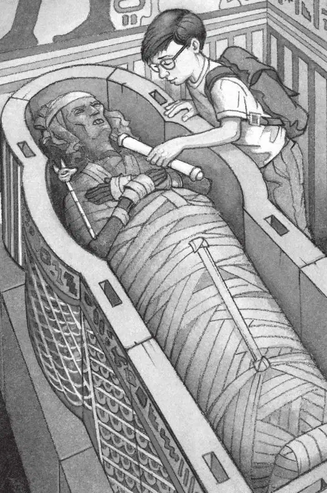

“原来是一具真正的木乃伊。”杰克想。
木乃伊的脑袋上裹着一圈一圈的绷带，而脸上的绷带多半已经脱落了。
是哈特比，尼罗河的女王。
哈特比的木乃伊并不美丽：破碎的牙齿，皱巴巴的小耳朵，被压扁的鼻子。她全身的肌肉已经萎缩，脸上嵌着两个黑洞洞的眼窝。
木乃伊身上腐烂的绷带正在一点点脱落，连骨头都露出来了。
“咦，真恶心！”安妮大声说，“我们快走吧！”
“不，”杰克说，“我觉得很有意思。”
“我可不觉得！”安妮说完就往房间外面走。
“等一等，安妮。”杰克说。
“走吧，杰克！快点儿！”安妮站在门口喊道。
杰克掏出埃及书，翻到画有木乃伊的一页，然后大声念道：
为了让尸体永不腐烂，
古埃及人想了许多办法来保护它。
首先，他们用盐把尸体腌干……
“恶心，别念啦！”安妮说。
“你再听一下。”杰克继续念：
接着用油涂抹尸体，
然后再用绷带紧紧地把它包裹起来。
大脑要被掏空……
“太恶心了！我走了，再见！”安妮说完一头冲出了房间。
“安妮！”杰克喊道，“我们必须把亡灵书给她！”
可是安妮已经离开了。
杰克从背包里掏出羊皮纸和权杖，把它们放在了木乃伊的头骨旁边。

这时，杰克仿佛听到了一声深深的叹息，颤抖着响彻整个房间，木乃伊的脸好像变得更平静一些了。这难道是杰克的幻觉？
杰克屏住呼吸，后退着离开了放木乃伊的房间。
然后，他匆匆穿过那间宝船屋，走下楼梯。
到了楼下，杰克深深地叹了一口气，如释重负。
他看看通道，通道里空无一人。
“喂！安妮！你在哪儿？”他喊。
没人回答。
“安妮去哪儿了呢？”杰克想，“难道安妮已经跑出金字塔了？”
他又往通道里面看了看，大喊了一声：“安妮！”
“救命，杰克！”安妮的声音突然传了过来，声音似乎来自很远的地方。
“是安妮！她在哪儿呢？”杰克心想。
“救命，杰克！”安妮又叫道。
“安妮！”杰克边喊边顺着昏暗的通道往里跑。
“救命，杰克！”安妮的喊声听上去越来越微弱。
杰克停住脚步仔细听了听。
他站的位置好像离安妮的声音更远了。
“安妮！”杰克又转身跑回墓室的方向。
“杰克！杰克！”安妮的声音似乎比刚才响亮了一些。
杰克爬上楼梯，回到了那间宝船屋。他看了看房间里的家具、乐器和那条船。
这下他才发现，在他刚才进来的那扇门旁边，还有另一扇门。
那扇门是开着的。
杰克立刻冲了进去，发现自己来到了一段楼梯的顶部。
“这段楼梯跟刚刚那扇门外的楼梯一样。”杰克想。
他走下楼梯，进入了另一条通道，通道的墙壁上点着火把。
“这条通道也跟别的通道完全相同。”杰克又想。
他喊了一声：“安妮！”
“杰克！”
“安妮！”
“杰克！”安妮从通道里跑出来，一下子撞在杰克身上。
“我迷路了！”安妮哭着说道。
“我想这就是那种假通道，专门用来迷惑盗墓人的。”杰克说。
“假通道？”安妮抽泣着问。
“是啊，它们看上去跟真的通道一模一样。”杰克说，“我们必须马上回到宝船屋，然后找到正确的门出去。”
就在这时，他们听见一阵吱吱嘎嘎的声音。
杰克和安妮连忙转过身，惊恐地注视着楼梯上方。
只见刚才那扇门缓缓地关上了，远处随之传来低沉的隆隆声，所有的火把瞬间熄灭了。